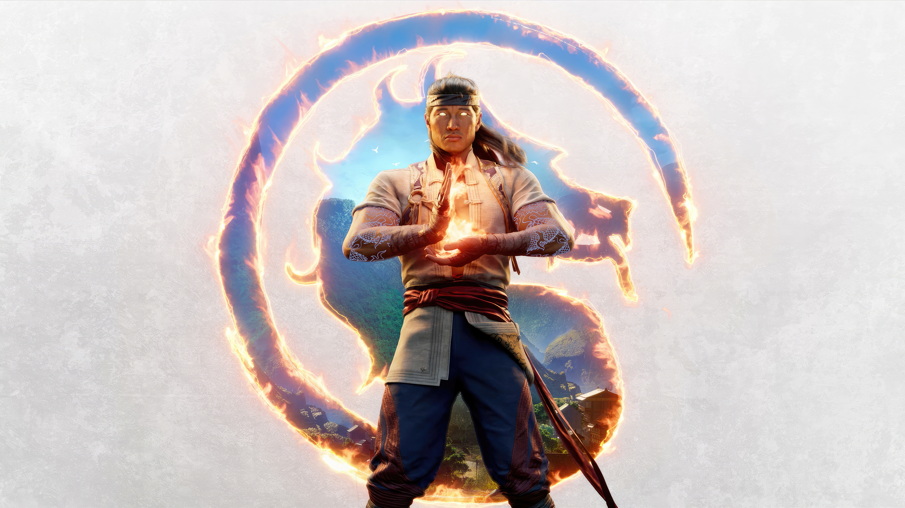

¿De qué trata la historia de Mortal Kombat 1 (Mortal Kombat 12)?
¿De qué trata la historia de Mortal Kombat 1? Si estás leyendo esto en 2023 tal vez tengas esta
pregunta en la cabeza luego de entrar a internet y ver que este es el nombre de Mortal Kombat 12.
No es un error ni tampoco has vuelto a los años 80’s, este videojuego fue anunciado por
Warner Bros Games y es una secuela, pero también un reboot de la franquicia de peleas que llegará
el próximo 19 de septiembre.
Y con el mensaje en el sitio web oficial: «Descubre un nuevo universo de Mortal Kombat creado
por Liu Kang, Dios del Fuego» tampoco podemos saber qué está pasando. Así que, vamos a descifrarlo,
lo primero es mencionar lo siguiente: Este juego es la secuela directa a Mortal Kombat 11 y retoma
algunos aspectos importantes del primer juego de la franquicia, de tal forma que, este videojuego
es una reinterpretación con elementos nuevos.
La historia de Mortal Kombat 1
Así que, vamos a entender de qué va la historia de Mortal Kombat 1 que, a su vez, es Mortal Kombat
12. El juego anterior salió en 2019 bajo el nombre: Mortal Kombat 11, comenzaba justo antes del
final de Mortal Kombat X. Raiden había tomado la energía que Shinnok indujo en la fuente del jinsei,
adquiriendo una personalidad más sádica, malvada y destructora, afirmando que no mostrará clemencia
con aquellos que amenacen la paz del Reino de la Tierra.
Tras una serie de batallas, todo culmina entre los ejércitos de la Tierra y el Mundo Exterior que
combaten a las tropas del Inframundo de Kronika, llegando a las puertas de su fortaleza. Liu Kang
termina por derrotar a Kronika en los albores del tiempo, dejando a un Raiden que ya no es divino.
Aquí es cuando inicia el contenido del DLC Aftermath y que nos da pie para el inicio de la historia de
Mortal Kombat 1 (Mortal Kombat 12). Cuando Liu Kang se disponía a restaurar el flujo del tiempo, un portal
aparece, surgiendo de este Shang Tsung, Fujin y Nightwolf. Shang Tsung afirma que si Liu Kang intenta restaurar
el flujo del tiempo, el reloj del tiempo será destruido debido a que no posee el poder suficiente para controlarlo.
De esta forma, tanto Raiden como Fujin no confían en el hechicero, aunque Liu Kang acepta seguir su plan, enviando
a Shang Tsung junto a Fujin y Nightwolf a la isla.
mas informacion proximamente
